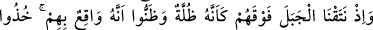
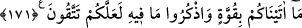

171. Bir zamanlar dağı İsrailoğullarının üzerine gölge gibi kaldırdık da üstlerine
düşecek sandılar. “Size verdiğimizi (Kitab’ı) kuvvetle tutun ve içinde olanı
hatırlayın ki korunasınız” dedik.
“Bir zaman da üzerlerine dağı,” yerinden sökerek “bir gölge gibi kaldırmıştık,”
Bu dağ, ya Mûsâ (a.s.)’ın üzerindeyken Allah kelâmını duyduğu ve kendisine Tevrat
levhalarının verildiği Tûr dağıdır. Ya da Filistin dağlarından birisidir. Yahut da
Beytü’l-Makdis’in yanındaki dağdır. Allah Teâlâ bu dağı, bulunduğu yerden sökerek
İsrâiloğulları’nın üzerine bir çardak/gölgelik gibi kaldırmıştı. “üstlerine düşecek
sanmışlardı:” yani dağın üstlerine düşeceğine kesin olarak inanmışlardı. Çünkü dağ,
havada sabit durmaz. Ayrıca Tevrat’ın hükümlerini kabul etmezlerse kendilerine böyle
bir ceza verileceği önceden bildirilmişti.
Rivayete göre Mûsâ (a.s.) İsrâiloğulları’na Tevrat’ı getirip içindeki hükümleri onlara
okudu. Onlar, bu zor mükellefiyetleri işittiler, onları kabulden ve onlara göre hareket
etmekten kaçındılar. Bunun üzerine Allah dağa emretti, dağ kökünden sökülüp
İsrâiloğulları’nın tepesine dikildi. Öyleki onların konakladıkları yerin tamamının
üzerini kapladı ve üzerinde dağın bulunmadığı kimse kalmadı. İsrâiloğulları’nın
konakladıkları yer fersah kare (yaklaşık 35 km2) idi. Onlara: “İçerisinde bulunan
hükümlerle birlikte Tevrat’ı kabul ederseniz ne âlâ! Yoksa dağ üzerinize
kaldırılacaktır.” denildi.
Dağın başlarının üzerine dikildiğini görünce hepsi sol yanı üzere secdeye kapandı,
sağ gözleriyle de üzerlerine düşmesinden korkarak dağa bakıyordu. Bu sebeple bütün
yahudiler sadece sol yanları üzere secde ederler ve “Bu, bizden azabı kaldıran secde
şeklidir.” derler. İsrâiloğulları, bu mükellefiyeti zorla kabul etmişlerdir.
Denilir ki: Bir şeyi zorla kabul eden kimse, bulduğu ilk fırsatta gerisin geri döner.
Tevrat ehli de Tevrât’ı zorla kabul ettikleri için fazla beklemeden onu tahrif etmeye
başlamışlardır.
“Size verdiğimizi” Kitab’ı “kuvvetle” zorluklarına katlanmayı göze alarak azim ve
ciddiyet ile “tutun ve içinde olanı” onlarla amel ederek ve unutulup bir köşede kalmış
şeyler gibi terk etmeyerek “hatırlayın ki” bu sayede kötü ahlak ve amellerden
“korunasınız.” demiştik.
Ayette işaret vardır ki eğer insan nefsinin ve tabiatının eline bırakılırsa, yaratılış
olarak dînî emirlerden hiçbirini kabul etmez ve asla onların meşakkatlerini çekmek
istemez. Ancak zahiri veya bâtıni bir destek ile bu emirleri kabule ve yüklenmeye
zorlanırsa mecburi olarak bunları yapar. İşte Allah Teâlâ, inâyet erbabına yardımını